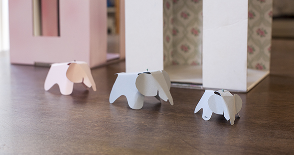
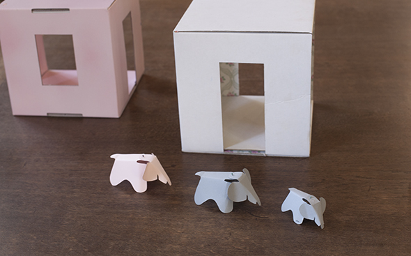
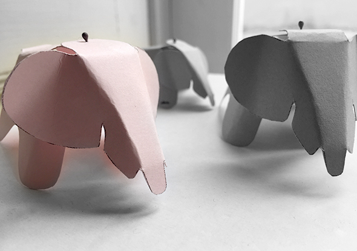

Here comes thanks Vitra real design for the dollhouse. On the .pdf document, you will find the elephant from the architects Charles and Ray Eames. We have reduced the original on Playmobil size. Download the archive and print it on thicker colored paper, cut along the lines and folds the elephant as you see them on the photos. The head can be glued or simply connect with a wire or a needle.
Here you have a couple of links to other blogs😍, the Vitra have used template!
la maison de loulou, vauvasaurus, my dubio, april and may MINI, Apartmenttherapy, monsters circus
Aquí viene gracias Vitra el diseño a la casa de muñecas. En el documento .pdf, encuentras el elefante de los Arquitectos Ray y Charles Eames. Hemos reducido el original al tamaño de Playmobil. Imprime el documente descargado en papel de color más gruesa. Cortada a lo largo de las líneas y pliegue el elefante como lo ves en las fotos. La cabeza puede ser pegado o simplemente conectado via un alambre o una aguja.
Aquí tienes un par de enlaces a otros blogs😍, el Vitra han utilizado plantilla!
la maison de loulou, vauvasaurus, my dubio, april and may MINI, Apartmenttherapy, monsters circus
Hier kommt dank Vitra echtes Design in die Puppenstuben. Auf der .pdf Vorlage, findet Ihr den Elefanten von den Architekten Ray und Charles Eames. Wir haben die Vorlage auf Playmobilgröße verkleinert. Man druckt den Download auf dickem farbigen Papier aus. Schneidet den Linien entlang und faltet den Elefanten, wie man ihn auf den Fotos sieht. Den Kopf kann man ankleben oder einfach mit einem Draht oder einer Nadel verbinden.
Hier habt Ihr ein paar links zu anderen Blogs😍, die die Vitra Vorlage benutzt haben!:
la maison de loulou, vauvasaurus, my dubio, april and may MINI, Apartmenttherapy, monsters circus